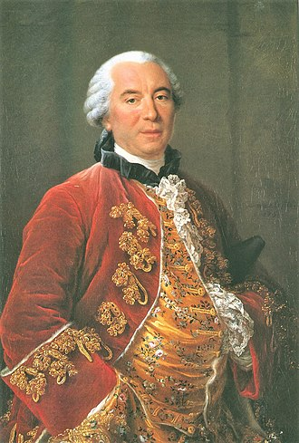

Georges-Louis Leclerc
Georges Louis Leclerc, conde de Buffon (Montbard, 7 de septiembre de 1707 – París, 16 de abril de 1788) fue un naturalista, botánico, biólogo, cosmólogo, matemático y escritor francés.
Buffon pretendió compendiar todo el saber humano sobre el mundo natural en su obra en 44 volúmenes Histoire naturelle. Su enfoque influyó en la Enciclopedia de Diderot y sus ideas también lo hicieron sobre las siguientes generaciones de naturalistas y en particular sobre Lamarck, Cuvier y Darwin.
En la biología
En embriología, Buffon defendió una teoría epigenetista. Frente al preformacionismo dominante en la época, Buffon postuló la existencia de «moléculas orgánicas», entidades primitivas e incorruptibles que constituirían a todos los seres vivos, uniéndose por «intususcepción» a lo largo de la embriogénesis.
En cuanto a su concepción del organismo, en su Discours sur la Nature des Animaux Buffon distingue entre las partes animal y vegetal de los animales, una distinción que sería más tarde desarrollada por Xavier Bichat y Cuvier: las funciones vegetativas u orgánicas están siempre actuando y son realizadas por los órganos internos, de los cuales el corazón es el órgano principal; las funciones animales son realizadas por las partes externas (los órganos de los sentidos y las extremidades). Así, podría decirse que un animal es un complejo de órganos que cumplen las funciones vegetativas (asimilación, crecimiento y reproducción) cubierto por un envoltorio formado por las extremidades, los órganos de los sentidos, los nervios y el cerebro, que sería el centro de este envoltorio.
Los animales pueden diferir los unos de los otros en sus partes externas, sin mostrar grandes diferencias en la ordenación de su partes internas. Sin embargo, si los órganos internos cambian, las partes externas cambiarán infinitamente.
Buffon es uno de los grandes exponentes de la idea de “scala naturae”. Así, Buffon ordena a los seres orgánicos de manera gradual, si bien la gradación no es de tipo morfológico, sino funcional.
Buffon fue también un firme creyente en la unidad del plan estructural de los vertebrados. Por vez primera, y aunque sea a modo de hipótesis, se explica la unidad de plan por unidad de origen.
Buffon rechaza la objetividad de la sistemática, especialmente la linneana, a la que considera totalmente artificial. Sin embargo, propone un concepto de especie muy próximo al concepto biológico moderno, fundamentado en la permanencia de los caracteres a lo largo de las generaciones y en la imposibilidad de obtener descendientes fecundos entre dos especies diferentes. En opinión de Buffon, los vacíos entre especies son la única discontinuidad mostrada por la Naturaleza.
El transformismo de Buffon está limitado al interior de las especies. Si bien Buffon especula sobre la posibilidad de un tipo original de donde habrían descendido el resto de los animales mediante transformaciones morfológicas:
«Podremos también decir que el hombre y mono, como caballo y asno, tienen un origen común; que en toda familia, tanto animal como vegetal hay un único tronco, e incluso que todos los animales proceden de uno solo que con el paso del tiempo, al ir perfeccionándose o degenerando, ha dado origen a todas las demás razas animales.»
Finalmente rechaza esta hipótesis basándose en la constancia de las especies y la infertilidad de los híbridos:
«¡Pero no! Por la revelación sabemos con certeza que todos los animales son igualmente consecuencia del acto de creación; que la primera pareja de cada género y de todos los géneros salió en su total perfección de las manos del creador. Y debemos creer que entonces eran casi iguales a como se nos presentan hoy en día en sus descendientes.»
La tesis de que Buffon era un evolucionista convencido que corrigió sus opiniones por miedo a la Iglesia, no es aceptada ya por ninguno de los expertos en la obra de Buffon. Como señala Russell, Buffon refuta la posibilidad transformista apelando a criterios racionales y no a un acto de fe: ¿Cómo podría suceder que dos individuos «degenerasen» en la misma dirección? ¿Cómo es que no encontramos enlaces intermedios entre las especies? Para Buffon, las «degeneraciones» han podido afectar tan sólo al tipo original de una especie por influencia especialmente del clima. No obstante, su cuestionamiento de la constancia absoluta de la especie, sus reflexiones sobre la historia de la Tierra, la fecundidad de los híbridos, el papel del medio y la biogeografía, abrirá la vía a la biología lamarckiana.
En anatomía comparada, su obra no destaca por sus observaciones detalladas, pero ofrece un programa de investigación que demostrará una fuerte influencia. Por un lado, insiste en la importancia del estudio de las estructuras internas (y no solo de la morfología externa) para la comprensión del funcionamiento de los organismos. Este proyecto será puesto en marcha por Daubeton y Vicq d'Azyr y conducirá a la gran síntesis de Georges Cuvier. Por otro lado, Buffon, desconfiando de la causalidad final, tiende a adoptar un enfoque puramente morfológico, considerando las formas independientemente de su función. Esta vía conducirá a los trabajos de Goethe y Étienne Geoffroy Saint-Hilaire. No obstante, las ideas de Buffon no estuvieron exentas de controversia. En particular su larga disputa con Thomas Jefferson y otros estudiosos norteamericanos al estar él convencido de que en América prevalecía un estado de evolución retardada tanto para las plantas y animales como para los indígenas. También sostuvo una curiosa polémica por correspondencia con Lord Monboddo, quien, en contra de la opinión de Buffon, insistía en la cercanía del parentesco de hombres y simios.